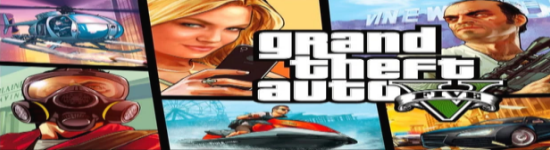
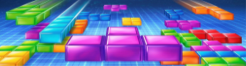
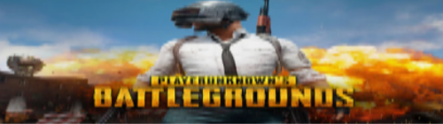

nummer 2
Grand Theft Auto V beter bekend als GTA V is de tweede meest verkochte game van de wereld.
het spel is meer dan 135 miljard keer verkocht. in het spel kun je samen met je vrienden rijden in
de snelste sportauto's van de wereld en kun je samen missies voltooien. je kunt dit spel spelen op pc, playstation
en xbox

nummer 3
Tetris is het derde meest verkochte spel. het is meer dan 100 miljard keer verkocht. het is een tactisch spel
waarin je puzzel stukjes die vanuit de lucht vallen moet laten passen in elkaar. het spel is overigens ook speelbaar op elk platform.

nummer 4
iedereen heeft dit waarschijnlijk ooit wel eens gespeeld, Wii Sports. dit spel is meer dan 82 miljard keer verkocht.
in het spel kan je 5 verschillende sporten spelen, namelijk: tennis, honkbal, bowlen, golf en boxen. dit spel is natuurlijk
alleen speelbaar op de Wii.
nummer 5
PlayerUnknown's Battlegrounds beter bekend als PUBG is een online battle royale game. het spel is meer dan 70 miljard keer
verkocht. het spel is een battle royale wat inhoud is dat je met x aantal spelers in een map wordt gezet en je vecht om als
enige over te blijven. het spel is speelbaar op pc, xbox en playstation.
